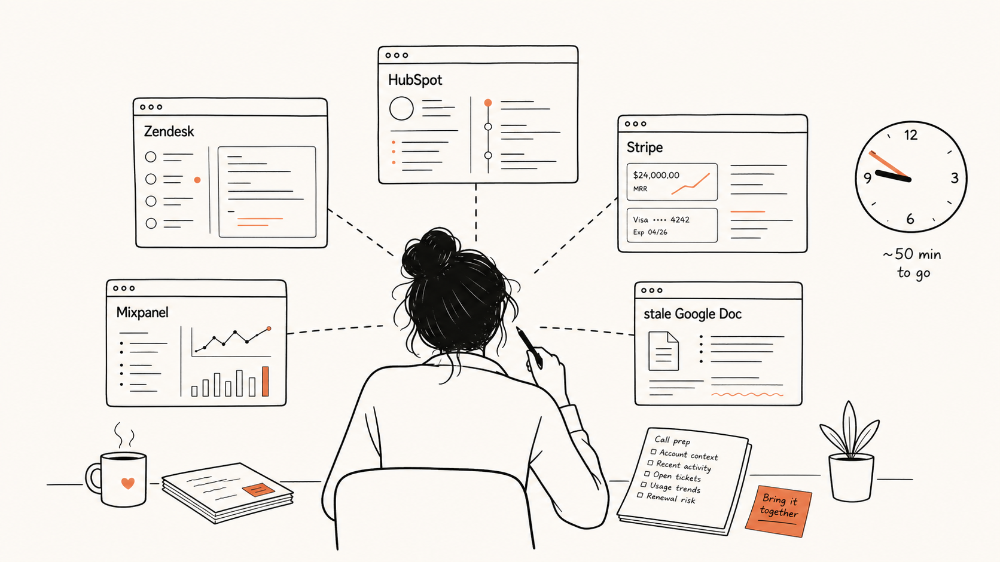
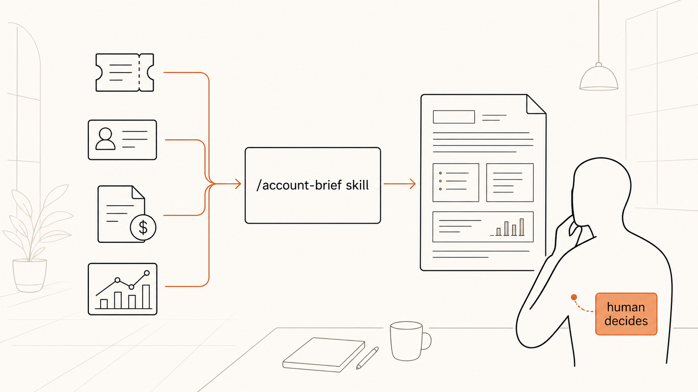

Problem Frame · Ví dụ 2
Founder một công ty SaaS B2B (60 người, cuối Series A) nói câu đó. Lần này nút thắt thật sự là đọc/tổng hợp — đúng việc AI giỏi. Nhưng giải pháp đúng không phải "hỏi Claude từng lần".
SaaS B2B · 60 người · cuối Series A · có team dev 8 người · framed 14/05/2026
↓ cuộn để đọcTrước mỗi cuộc gọi gia hạn (renewal call), CSM phải tự đọc lại toàn bộ lịch sử khách: ticket support 12 tháng, email threads, ghi chú CRM, usage data, hóa đơn, các lần escalate. Trung bình 45–60 phút chuẩn bị/cuộc gọi. ~20 call/tuần across team = ~15–18h/tuần "đọc lại".

[Hình · 5 tab, một bản brief lỗi thời, ~50 phút trước mỗi cuộc gọi]
Thông tin về khách phân tán across 5 hệ thống. Không ai tổng hợp. Mỗi lần cần "bức tranh khách" thì dựng lại bằng tay.
Không phải thiếu người. Không phải incentive sai. Là một việc đọc + tổng hợp lặp đi lặp lại mà chưa ai tự động hóa. Quan trọng: data không bẩn — nó rải rác nhưng sạch, và cả 5 hệ thống đều có API. Đây không phải một data-cleanup project trá hình. Chạy qua 5 câu gate: nút thắt ✓ là phán đoán/ngôn ngữ/tổng hợp · lặp đủ nhiều ✓ (~20/tuần) · input có sẵn ✓ · ai dùng output — CSM, không gửi khách, không pháp lý ✓ · và Claude làm phần đọc/tổng hợp, con người vẫn quyết cuộc gọi.
Năm trên năm câu. Đây là vấn đề AI thật. Giá trị tiềm năng: ~0.4 FTE/năm được giải phóng + renewal call chuẩn bị tốt hơn → NRR — tổng ~200.000$+/năm.
CSM mở MỘT chỗ, gõ tên khách, nhận một bản brief 1 trang trong 60 giây: tình trạng hợp đồng · usage trend · 3 ticket gần nhất + cái nào còn mở · escalations · hóa đơn quá hạn · "điểm rủi ro" + lý do · 3 điểm nên hỏi. Chuẩn bị: 45 phút → dưới 10 phút.
Nhưng cách làm KHÔNG phải "CSM hỏi Claude từng lần". Là dựng một môi trường — một lần.

[Hình · 4 hệ thống → một skill → một brief → con người quyết. Đó là môi trường, không phải use case.]
/account-brief (skill, dùng được trong Cowork bởi CSM không kỹ thuật) + MCP server nối Zendesk/HubSpot/Stripe/Mixpanel (dev build, hoặc connector sẵn). Sau: bọc thành Routine chạy đêm trước mỗi renewal call./account-brief {tên khách} → brief 1 trang theo template cố định: hợp đồng · usage trend · 3 ticket + open · escalations · billing flags · risk score + lý do · 3 câu nên hỏi./account-brief skill + MCP nối 4 hệ thống. Đây là hướng. MCP trước (~1 tuần hoặc connector sẵn), skill sau (~2 ngày), test với 1 CSM 1 tuần, rollout.Verdict
MCP nối 4 hệ thống + skill /account-brief + ranh giới rõ (Claude tổng hợp, CSM quyết). Bắt đầu từ Direction B: dev làm MCP trước, skill sau, test với 1 CSM một tuần.
Đánh đổi bạn chấp nhận: ~1.5 tuần dev time bây giờ — đổi lấy ~0.4 FTE/năm vĩnh viễn + NRR tốt hơn. Và kỷ luật giữ ranh giới: cái brief tốt đến mấy cũng không thay phán đoán của CSM về cuộc gọi.
Mỗi renewal call, CSM tự đọc lại ticket 12 tháng + email + CRM + usage + hóa đơn + escalations · ~45–60 phút/call · ~20 call/tuần ≈ 15–18h/tuần.
~5 call/người/tuần × ~50 phút ≈ ~4h/người/tuần. + QBR: ~8/quý × ~2h chuẩn bị.
5 tab (Zendesk, HubSpot, Stripe, Mixpanel) + một Google Doc "account brief" tự gõ, thường lỗi thời. Hiếm khi update sau call.
Thông tin phân tán across 5 hệ thống, không ai tổng hợp · không phải thiếu người / incentive · data sạch, có API — không phải data-cleanup project.
4 × ~4h × 48 tuần ≈ ~768h/năm ≈ ~0.4 FTE ≈ ~28k$/năm + NRR (102→105 ≈ ~180k$ ARR) → tổng ~200k$+/năm.
Gõ tên khách → brief 1 trang trong 60s (hợp đồng · usage trend · ticket · escalations · billing · risk + lý do · 3 câu nên hỏi) · chuẩn bị 45 phút → <10 phút.
Zendesk · HubSpot · Stripe · Mixpanel · Google Workspace · Slack · Linear · team dev 8 người · tất cả tool có API.